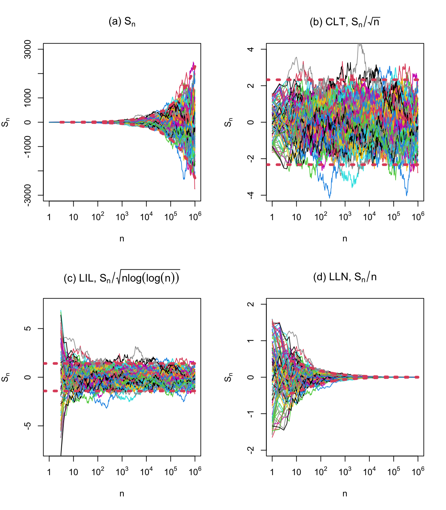

Warning: package 'DescTools' was built under R version 4.4.110 The Law of the Iterated Logarithm
10.1 The Law of the iterated logarithm (LIL)
Theorem 10.1 (Hartman and Wintner LIL)
\(X, X_1, X_2, \ldots\)가 mean 0, variance \(\sigma^2 <0\)을 갖는 i.i.d. 확률변수들이라고 하고 \(S_n = \sum_{k=1}^n X_k, n\geq 1\)이라고 하면 \[ \lim\sup_{n\rightarrow\infty} (\lim\inf_{n\rightarrow\infty}) \frac{S_n}{\sqrt{2\sigma^2 n \log \log n}} = +1 (-1) \quad{} \text{a.s.} \tag{10.1}\]
이를 간단히 쓰면 \[ \lim\sup_{n\rightarrow\infty} \frac{|S_n|}{\sqrt{2\sigma^2 n \log \log n}} = 1 \quad{} \text{a.s.} \]
역으로 만약 \[ P\Big( \lim\sup_{n\rightarrow\infty} \frac{|S_n|}{\sqrt{n \log \log n}} < \infty \Big) >0 \] 이면 \(E(X^2)<\infty\), \(E(X)=0\), (Equation 10.1) 이 성립
Remark
왜 하필 \(\log \log n\)이라는 생각이 들 수도 있는데, 어떤 사람들은 normal distribution의 density에 \(\exp (-x^2/2)\)가 있어서 이 효과를 상쇄하려면 대략 \(\sqrt{\log \log n}\)을 쓰는 것으로 이해해 볼 수도 있음
한편, Theorem 10.1 과 같은 상황에서 체비세프 부등식을 적용하면 \[ P\Big( \Big\vert \frac{S_n}{\sqrt{2\sigma^2 n \log \log n}} \Big\vert > \varepsilon \Big)\leq \frac{1}{2\varepsilon^2 \log \log n} \stackrel{n\rightarrow \infty}{\rightarrow} 0 \] 이기 때문에 \[ \frac{S_n}{\sqrt{2\sigma^2 n \log \log n}} \stackrel{p}{\rightarrow} 0 \quad{} \text{as }n \rightarrow \infty \] 즉, \(\frac{S_n}{\sqrt{2\sigma^2 n \log \log n}}\)는 0으로 확률수렴한다.
그러나 sample-wise, path-wise (a.s. 관점에서)로는 \(-1\)과 \(1\) 사이에서 진동한다.
10.2 R 코드
Haigh (2013) 의 Example 6.21
Q. Long-run behaviour of sums
Q. \(n\)이 증가함에 따라 \(S_n /\sqrt{n}\)의 fluctuations의 size는?
10.2.1 Simulation setting
\(Y_n \stackrel{\text{indep}}{\sim} U(0,1)\)
\(X_n = Y_n \sqrt{12} - \sqrt{3}\), so that \(X_n \stackrel{\text{i.i.d.}}{\sim} U(-\sqrt{3}, \sqrt{3})\): 이렇게 하면 \(E(X_n)=0, \text{Var}(X_n)=1\)이 됨
\(S_n = X_1 + \cdots X_n\)

10.2.2 Results
그림에 대한 추가 설명(참고로 모든 그림의
x축은log-스케일이다):- \(n\)이 커짐에 따라 random sums \(S_n\)이 어떻게 되는지 보여줌, 점선은 \(\pm \sqrt{2 n \log \log n}\)
- (CLT) \(n\)이 커짐에 따라 \(S_n/\sqrt{n}\)은 standard Gaussian으로 분포수렴, 점선은 \(\pm \mathcal{N}^{-1}(0.01)\) (분위수)
- (LIL) \(n\)이 커짐에 따라 \(S_n/\sqrt{n\log \log n}\)은 \([-\sqrt{2}, \sqrt{2}]\) 사이에 존재, 점선은 \(\pm \sqrt{2}\)
- (SLLN) \(n\)이 커짐에 따라 \(S_n/n \rightarrow 0\), 점선은 \(\pm \sqrt{ \frac{2 \log \log n}{n}}\)
SLLN: \(S_n / n \stackrel{n\rightarrow \infty}{\rightarrow} 0\) 임을 말하는데, 이는 어떤 \(\varepsilon>0\)이 주어졌을 때, \(\forall n \geq N\)에 대해 \(S_n/n\)이 구간 \((-\varepsilon, \varepsilon)\) 안에 있도록 하는 \(N\)이 존재
CLT: \(S_n /\sqrt{n} \stackrel{d}{\rightarrow} \mathcal{N}(0,1)\) 임을 말하는데, 이는 \(n\)이 클때 \(P(-1< S_n /\sqrt{n} < 1) \approx 0.68\), \(P(|S_n /\sqrt{n}|>2)\approx 0.05\)임 등을 추론할 수 있음을 의미함
- 그러나 CLT가 boundedness를 말하는 것은 아니기 때문에 \(n\)이 매울 클 때에도 매우 크거나 작은 \(S_n/\sqrt{n}\)이 나올 수 있음
LIL: \(U_n = S_n / \sqrt{n \log (\log (n))}\)에 대해 말하는데, \(\sqrt{\log (\log (n))}\)은 unbounded지만 매우 천천히 증가하는 함수임, \(n=10^6\)일 때 비로소 \(\sqrt{\log (\log (n))}\approx 1.62\)가 됨
- \(S_n\) 또한 \(n\)이 커질수록 천천히 변하기 때문에 \(U_n\)은 매우 천천히 변할 것이라 생각할 수 있음
- 그러나, \(\sqrt{\log (\log (n))}\)은 \(\mathcal{N}(0,1)\)의 변화를 잡아줄 수 있을 정도로 큰 값이기는 함
정리해보자면, LIL은 언젠가는 \(U_n\)이 \((-\sqrt{2},\sqrt{2})\)에 있을 것임을 의미함